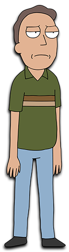

Personajes
En esta sección exploramos a los personajes principales e icónicos de Rick & Morty. Verás fichas claras con sus rasgos, relaciones y evolución a lo largo de la serie y sin spoilers.
Personajes Principales
Rick Sanchez
Descripción: Científico loco, abuelo de Morty, conocido por su inteligencia y comportamiento errático.
Morty Smith
Descripción: de Rick, un adolescente inseguro que a menudo se ve arrastrado a las aventuras de su abuelo.
Summer Smith

Descripción: Hermana mayor de Morty, una adolescente popular y segura de sí misma.
Beth Smith

Descripción: Madre de Morty y Summer, veterinaria de caballos y esposa de Jerry.
Jerry Smith
Descripción: Padre de Morty y Summer, a menudo inseguro y dependiente de Beth.